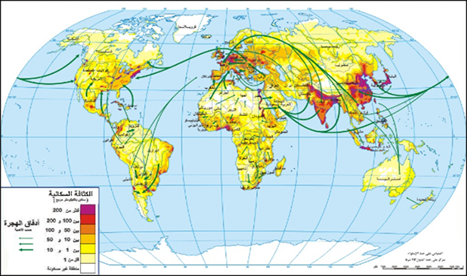
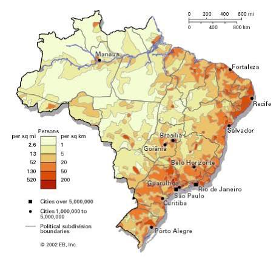
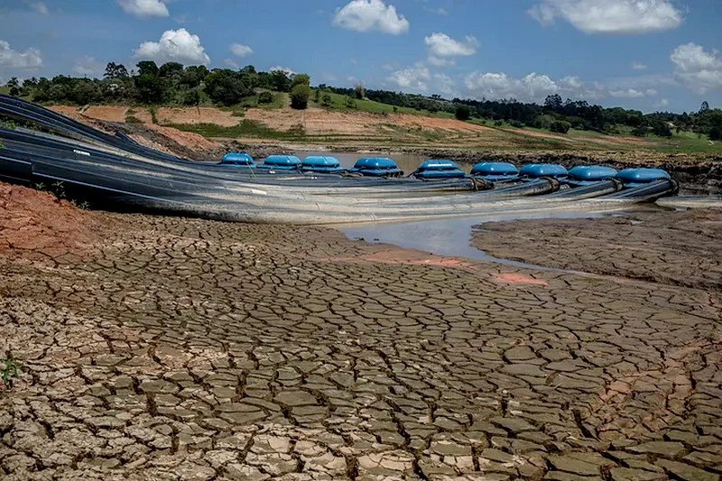
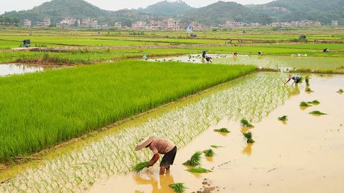
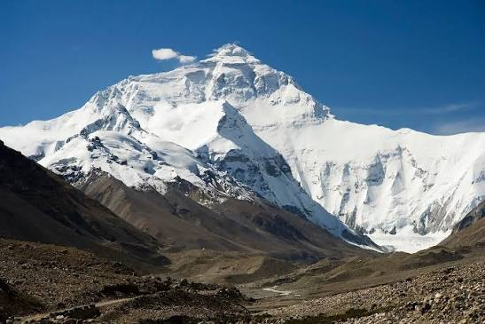
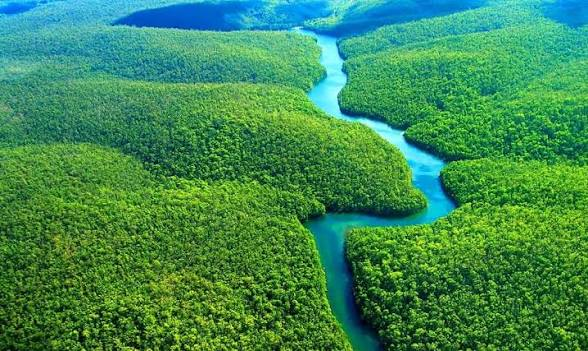
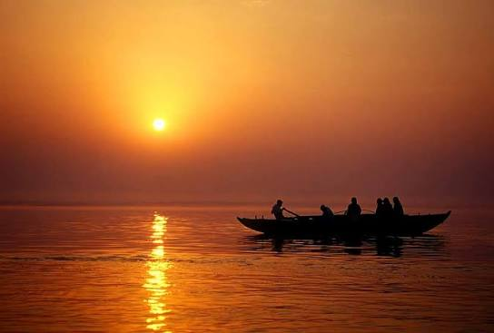
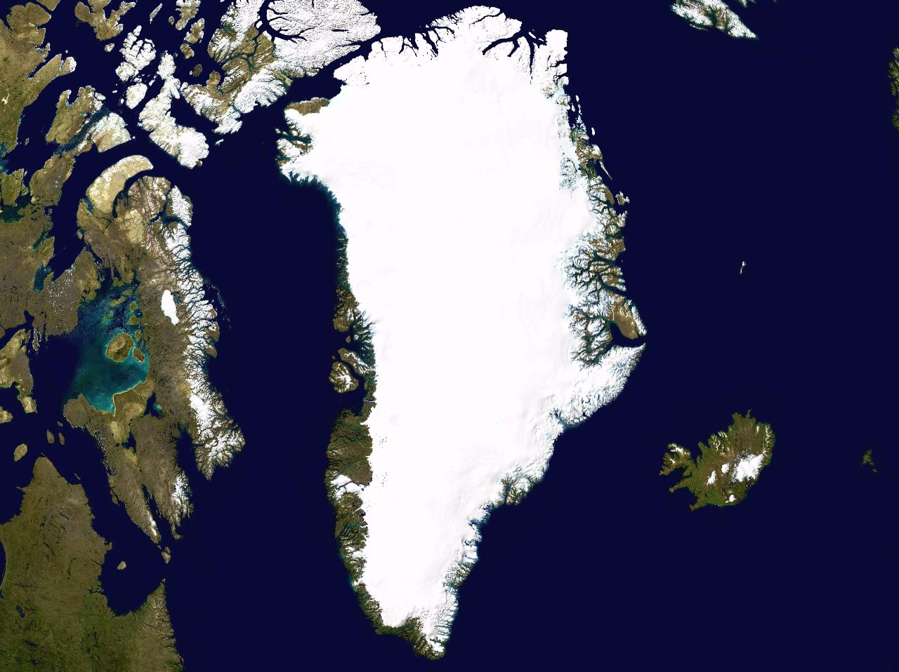

التوزع الجغرافي للسكان
مقدمة
يعد العالم سنة 2021 أكثر من 7.8 مليار نسمة يتوزعون بصفة متفاوتة عبر المجال العالمي. ويُقصد بالتوزع الجغرافي للسكان الطريقة التي ينتشر بها السكان على سطح الأرض، وهو توزع غير متوازن بين القارات والدول والجهات، إذ تتركز الكثافات السكانية الكبرى في مساحات محدودة بينما تمتد مساحات شاسعة شبه خالية من السكان. وبلغ عدد سكان العالم سنة 2022 حوالي 8 مليارات نسمة حسب تقديرات الأمم المتحدة، ومن المتوقع أن يصل إلى 9.7 مليار نسمة سنة 2050.
ما هي خصائص التوزع الجغرافي للسكان في العالم انطلاقاً من التوزع الجغرافي للسكان بالبرازيل؟ وما هي العوامل المفسرة له؟
I التوزع الجغرافي للسكان بالبرازيل
يقع البرازيل جنوب القارة الأمريكية وهو بلد نامٍ يمسح 8.5 مليون كلم²، ويبلغ عدد سكانه سنة 2022 حوالي 215 مليون نسمة. وهو بذلك خامس أكبر دولة في العالم من حيث المساحة والسكان، ويحتل المرتبة السابعة عالمياً من حيث عدد السكان. ورغم هذا الحجم الكبير فإن سكانه لا يتوزعون بصفة متساوية على كامل ترابه.
1. خصائص التوزع الجغرافي للسكان
يتوزع السكان بالبرازيل بصفة متفاوتة:
أ. مناطق ذات كثافة سكانية مرتفعة
تتمثل في إقليم الشمال الشرقي، وخاصة إقليم الجنوب الشرقي الذي يضم التجمعات الحضرية الكبرى مثل ريو دي جانيرو وساو باولو التي تعتبر العاصمة الاقتصادية للبرازيل. وتُعد ساو باولو أكبر مدينة في البرازيل وواحدة من أكبر مدن العالم، إذ يزيد عدد سكان تجمعها الحضري على 22 مليون نسمة، كما أن ريو دي جانيرو من كبرى المدن العالمية وتُعد مركزاً سياحياً وثقافياً كبيراً. وتتميز هذه المناطق بتطور الأنشطة الصناعية والتجارية والخدمية، مما جعلها قطب استقطاب للمهاجرين الداخليين.
تمثل هذه الأقاليم 36% من مساحة البرازيل وتضم 83% من مجموع السكان، ويمثل الجنوب الشرقي مركز ثقل سكاني إذ يأوي 42% من مجموع السكان، وتتجاوز فيه الكثافة السكانية 100 س/كم². ويُضاف إلى ذلك أن المناطق الساحلية الشرقية تعرف أعلى الكثافات، بينما تقل الكثافة كلما توغلنا نحو الداخل.
ب. مناطق ذات كثافة سكانية ضعيفة
تشمل الشمال (3 س/كم²) والوسط الغربي (6 س/كم²)، ويمثل الإقليمان 64% من المساحة الجملية ويضمان 17% من مجموع السكان. ويُعد إقليم الأمازون من أكبر مناطق الخلاء السكاني في العالم، إذ تبلغ مساحته أكثر من 5 ملايين كلم² ولا يقطنه إلا عدد قليل من السكان الأصليين والمستوطنين، وتغلب عليه الغابات الاستوائية الكثيفة والأمطار الغزيرة. أما الوسط الغربي فهو منطقة هضاب وسافانا تفتقر إلى الكثافة السكانية باستثناء بعض المدن الجديدة التي أُنشئت حديثاً مثل برازيليا العاصمة السياسية.
2. عوامل التفاوت في التوزع الجغرافي للسكان في البرازيل
أ. عوامل طبيعية
عوامل جاذبة للسكان: الموقع الساحلي المنفتح على المحيط الأطلسي، وامتداد السهول الخصبة، وتوفر مناخ مداري رطب. ويُضاف إلى ذلك توفر الثروات الطبيعية كموانئ طبيعية صالحة للملاحة الدولية، وقرب هذه المناطق من طرق التجارة البحرية العالمية منذ العصر الاستعماري.
عوامل طبيعية منفرة للسكان: الجفاف الذي يغطي جزءاً كبيراً من الشمال الشرقي، والهضاب المرتفعة بالوسط الغربي، والرطوبة المفرطة بأمازونيا، وكثافة الغابات الاستوائية، وانتشار الأمراض المدارية كالملاريا في مناطق الأمازون، وعزلة هذه المناطق عن المراكز الحضرية الكبرى.
ب. عوامل تاريخية
ترتبط بقدم التعمير بالمناطق الساحلية التي استقطبت أدفاق المهاجرين منذ القرن 16 من برتغاليين وإسبان وإيطاليين وأفارقة. ويُضاف إلى ذلك أن البرازيل كانت مستعمرة برتغالية منذ سنة 1500، وقد ارتبط اقتصادها في البداية بزراعة قصب السكر في السواحل الشمالية الشرقية، ثم انتقل مركز الثقل الاقتصادي إلى الجنوب الشرقي مع اكتشاف الذهب في ميناس جيرايس في القرن 18، ثم مع نمو القطاع الصناعي في ساو باولو في القرن 20. كما أن تجارة الرقيق الأفريقي ركزت أعداداً كبيرة من السكان في المناطق الساحلية والزراعية.
ج. عوامل اقتصادية
تتمثل في تركز الأنشطة الاقتصادية وجل الاستثمارات بالأقاليم الساحلية خاصة الجنوب الشرقي، وقابل ضعف التصنيع بالمناطق الداخلية. ويُضاف إلى ذلك تفاوت البنيات التحتية بين المناطق، إذ تتركز الطرق السريعة والموانئ والمطارات والجامعات والمستشفيات في الجنوب والجنوب الشرقي، بينما تعاني مناطق الشمال والوسط الغربي من ضعف الخدمات والبنية التحتية. وقد أدى ذلك إلى هجرات داخلية كثيفة من الريف نحو المدن الكبرى، خاصة من الشمال الشرقي الفقير نحو ساو باولو وريو دي جانيرو.
II التوزع الجغرافي للسكان في العالم
1. خصائصه
يتوزع السكان في العالم بصفة متفاوتة، ويمكن أن نميز بين مناطق إعمار كبرى ومناطق خلاء سكاني تصنف كالتالي:
أ. مناطق الإعمار الكبرى
يقع معظمها في النصف الشمالي من الكرة الأرضية خاصة على طول السواحل والأنهار، وهي تنقسم إلى:
مناطق تركز رئيسية:
- جنوب آسيا التي تضم 2 مليار نسمة، ومن بينها الهند (1.390 مليار). وتُعد الهند ثاني أكبر دولة في العالم من حيث عدد السكان، وتتركز كثافاتها السكانية الكبرى في السهول الشمالية على طول نهر الغانج وفي السواحل الغربية.
- شرق آسيا التي تأوي 1.650 مليار نسمة، من بينها الصين (1.4 مليار). وتتركز الكثافات الكبرى في السهول الشرقية والصينية على طول الأنهار الكبرى كاليانغتسي والنهر الأصفر.
- أوروبا تضم 700 مليون نسمة، وتتميز بكثافات سكانية عالية في السهول الوسطى والمناطق الصناعية.
- جنوب شرقي آسيا يضم 671 مليون نسمة، وتتركز الكثافات في الجزر والسواحل والدلتات.
مناطق تركز سكاني ثانوية: يفوق عدد سكانها 100 مليون:
- خليج غينيا (323 مليون)
- الشمال الشرقي لأمريكا الشمالية (220 مليون)
- جنوب شرقي البرازيل
تتميز هذه المناطق بكثافات سكانية عالية تفوق أحياناً 20 ألف نسمة/كلم² (الصين – الهند). ويُلاحظ أن هذه المناطق تتقاسم خصائص مشتركة، منها الموقع الساحلي أو النهري، والتربة الخصبة، والمناخ الملائم، والتاريخ العريق للتعمير، والنشاط الاقتصادي الكثيف.
ب. مناطق الخلاء السكاني
هي مناطق ذات عدد محدود من السكان، وهي تقع في:
- الصحاري: الصحراء الأفريقية الكبرى – صحراء أستراليا – صحراء شبه الجزيرة العربية – الصحاري الأمريكية.
- الغابات الاستوائية الكثيفة بأمازونيا وأفريقيا.
- المرتفعات الجبلية كالهيمالايا بآسيا.
- المناطق القطبية الباردة: سيبيريا – غرينلاند.
تتميز هذه المناطق بكثافات سكانية عامة ضعيفة تقل عن 10 ساكن/كلم²، مثال: 0.03 س/كلم² في غرينلاند و3 سا/كلم² في أستراليا. وتُعد هذه المناطق خلاء سكانياً بسبب قساوة الظروف الطبيعية، لا بسبب انعدام الموارد بالضرورة، إذ توجد بها ثروات طبيعية معتبرة لم تُستغل بعد بسبب المناخ القاسي.
2. عوامل التفاوت في التوزع الجغرافي للسكان
أ. عوامل التركز السكاني
عوامل طبيعية: تتمثل في وفرة معطيات طبيعية جاذبة للسكان: السهول الخصبة – وفرة الموارد المائية – موقع جغرافي منفتح على الواجهات البحرية – مناخات رطبة. ويُضاف إلى ذلك توفر الثروات الطبيعية والمعادن والطاقة، وتوفر المناخات المعتدلة الملائمة للاستقرار البشري.
عوامل تاريخية: ترتبط بقدم ظاهرة التعمير كالصين والهند وأوروبا والهلال الخصيب. وقد عرفت هذه المناطق حضارات زراعية قديمة منذ آلاف السنين، مما سمح بتراكم سكاني كبير عبر التاريخ، على عكس المناطق التي لم تُعمر إلا حديثاً كأستراليا والأمريكيتين.
عوامل اقتصادية: ترتبط بتوفر مواطن شغل توفرها الأنشطة الاقتصادية:
- نظام الأرزّية بجنوب وشرقي آسيا: يعتمد على زراعة كثيفة مشغلة ذات محصول غذائي رئيسي يتمثل في الأرز، ويتطلب هذا النظام عدداً كبيراً من السكان لتشييد السدود ومد قنوات الري واستصلاح الأراضي. وقد ساهم في تكوين كثافات سكانية مرتفعة جداً في دلتات الأنهار.
- تنامي الأنشطة الصناعية: مثال أوروبا التي شهدت ثورة صناعية في القرن 19، خاصة بالمدن الكبرى، مما جعلها قطب استقطاب للهجرة الداخلية والخارجية. ويُلاحظ أن الصناعة كانت منذ القرن 19 العامل الرئيسي في تركيز السكان، ثم أصبحت اليوم الخدمات والتكنولوجيا عاملاً جديداً في استقطابهم.
ب. عوامل الخلاء السكاني
يفسر الخلاء السكاني بقساوة الظروف الطبيعية المنفرة:
- مناخ غير ملائم: المناخات الباردة بالمناطق القطبية والمناخ الجاف والقاحل بالمناطق الصحراوية.
- فقر التربة وضعف الغطاء النباتي.
- التضاريس المعرقلة: المرتفعات الجبلية تمثل عائقاً أمام التنقل وتعاطي الأنشطة البشرية.
- الغابات الكثيفة مثل أمازونيا.
ويُضاف إلى هذه العوامل الطبيعية عوامل أخرى، منها بُعد هذه المناطق عن المراكز الحضرية والأسواق، وضعف البنية التحتية وشبكات النقل، وقلة الاستثمارات، وعدم توفر الخدمات الأساسية كالتعليم والصحة. كما يمكن أن تلعب العوامل السياسية دوراً في إبقاء بعض المناطق خالية، كما هو الحال في المناطق العسكرية المغلقة أو المحميات الطبيعية.
خاتمة
يتوزع السكان بصفة متفاوتة نتيجة لعوامل متعددة. فالتفاوت السكاني في العالم وفي البرازيل ليس عشوائياً، بل يخضع لعوامل طبيعية وتاريخية واقتصادية متداخلة، تُنتج مناطق إعمار كبرى ومناطق خلاء سكاني. وما هو دور الحركية المجالية للسكان في تعميق هذا التفاوت؟
📖 تعريفات
🌍 دول ومناطق
- البرازيل: بلد نامٍ يقع جنوب القارة الأمريكية، تبلغ مساحته 8.5 مليون كلم² وعدد سكانه سنة 2022 حوالي 215 مليون نسمة. يُعد خامس أكبر دولة في العالم من حيث المساحة والسكان، ويحتل المرتبة السابعة عالمياً من حيث عدد السكان، ويتميز بتوزع سكاني غير متساوٍ بين الأقاليم.
- ساو باولو: أكبر مدينة في البرازيل وواحدة من أكبر مدن العالم، وتُعد العاصمة الاقتصادية للبرازيل، إذ يزيد عدد سكان تجمعها الحضري على 22 مليون نسمة، وتقع في إقليم الجنوب الشرقي.
- ريو دي جانيرو: من كبرى المدن العالمية وتُعد مركزاً سياحياً وثقافياً كبيراً، وتقع في إقليم الجنوب الشرقي بالبرازيل.
- برازيليا: العاصمة السياسية للبرازيل، وهي من المدن الجديدة التي أُنشئت حديثاً في إقليم الوسط الغربي.
- الأمازون: إقليم يقع في شمال البرازيل، ويُعد من أكبر مناطق الخلاء السكاني في العالم، إذ تبلغ مساحته أكثر من 5 ملايين كلم²، وتغلب عليه الغابات الاستوائية الكثيفة والأمطار الغزيرة، ولا يقطنه إلا عدد قليل من السكان الأصليين والمستوطنين.
- الهند: ثاني أكبر دولة في العالم من حيث عدد السكان (1.390 مليار نسمة)، وتتركز كثافاتها السكانية الكبرى في السهول الشمالية على طول نهر الغانج وفي السواحل الغربية.
- الصين: من أكبر دول العالم سكانياً (1.4 مليار نسمة)، وتتركز الكثافات الكبرى في السهول الشرقية والصينية على طول الأنهار الكبرى كاليانغتسي والنهر الأصفر.
- غرينلاند: منطقة قطبية باردة تُعد من مناطق الخلاء السكاني، إذ تبلغ كثافتها السكانية 0.03 ساكن/كلم² فقط.
- سيبيريا: منطقة قطبية باردة في شمال آسيا تُعد من مناطق الخلاء السكاني بسبب قساوة الظروف المناخية.
- الهيمالايا: مرتفعات جبلية في آسيا تُعد من مناطق الخلاء السكاني بسبب التضاريس المعرقلة.
- الصحراء الأفريقية الكبرى: من كبرى الصحاري في العالم، تُعد من مناطق الخلاء السكاني بسبب المناخ الجاف والقاحل.
- خليج غينيا: منطقة تركز سكاني ثانوية يفوق عدد سكانها 100 مليون نسمة (323 مليون).
- الشمال الشرقي لأمريكا الشمالية: منطقة تركز سكاني ثانوية يفوق عدد سكانها 100 مليون نسمة (220 مليون).
📅 سنوات وفترات
- 1500: بداية الاستعمار البرتغالي للبرازيل.
- 2021: بلغ عدد سكان العالم أكثر من 7.8 مليار نسمة.
- 2022: بلغ عدد سكان العالم حوالي 8 مليارات نسمة، وبلغ عدد سكان البرازيل حوالي 215 مليون نسمة.
- 2050: من المتوقع أن يصل عدد سكان العالم إلى 9.7 مليار نسمة.
📌 أخرى
- الكثافة السكانية: عدد السكان في الكيلومتر المربع الواحد، وتُعد مؤشراً أساسياً لقياس التوزع الجغرافي للسكان.
- نظام الأرزّية: نظام زراعي بجنوب وشرقي آسيا يعتمد على زراعة كثيفة مشغلة ذات محصول غذائي رئيسي يتمثل في الأرز، ويتطلب عدداً كبيراً من السكان لتشييد السدود ومد قنوات الري واستصلاح الأراضي، مما ساهم في تكوين كثافات سكانية مرتفعة جداً في دلتات الأنهار.
🗺️ خرائط ومعطيات مصورة







